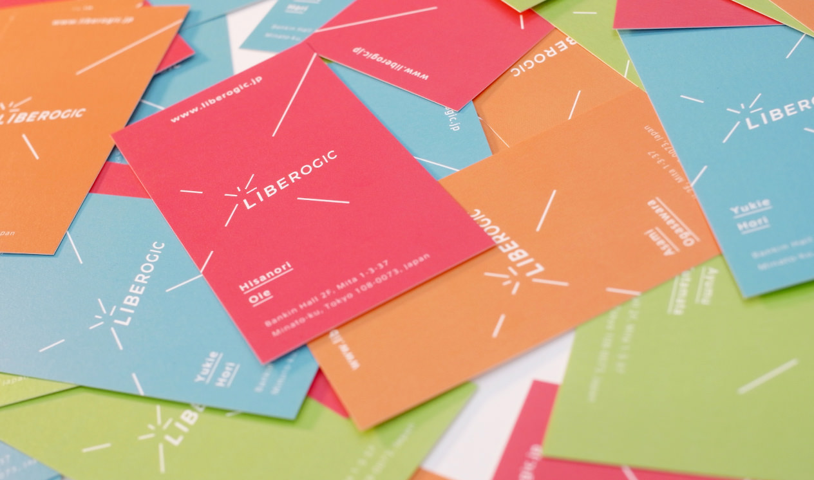
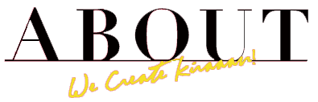
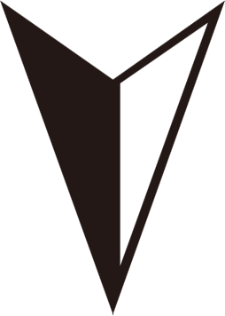

Liberogic was born from the words, Logic and Libero [Liberty] . We like to create innovative inspiration which we call "Kiraaan", by the unconventional free idea and the logical thinking to solve problems.

< ENTER
Liberogic was born from the words, Logic and Libero [Liberty] . We like to create innovative inspiration which we call "Kiraaan", by the unconventional free idea and the logical thinking to solve problems.
< MORE
QQ439031210
Phone/Weixin15146872342
个人简介能够熟练使用DIV+CSS布局，能够解决不同浏览器下的兼容性,熟练使用原生JS，能够运用JQ框架进行交互效果的实现，了解AJAX工作原理，能够与后台合作，渲染数据到前端页面，有强烈的学习愿望，本人有能力进行大规模的团队合作，并能够承受工作压力。